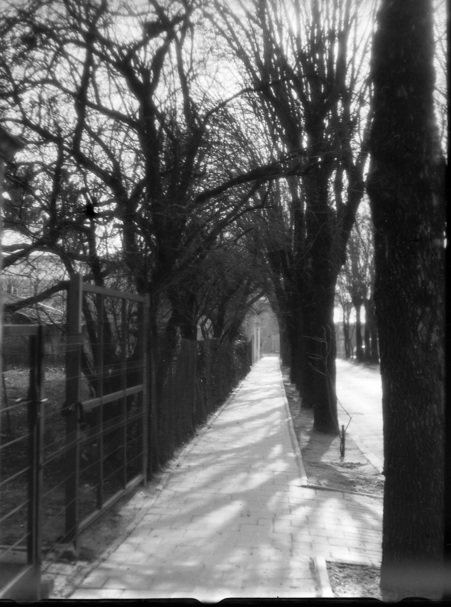
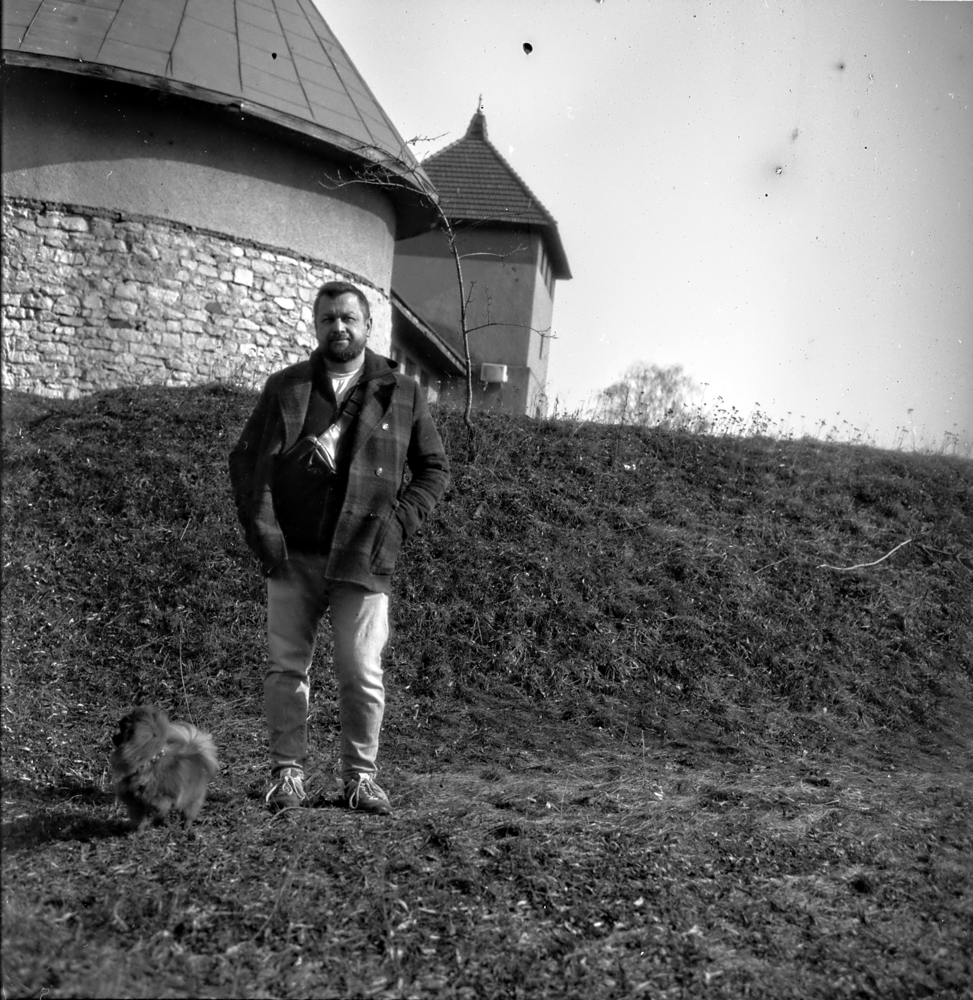
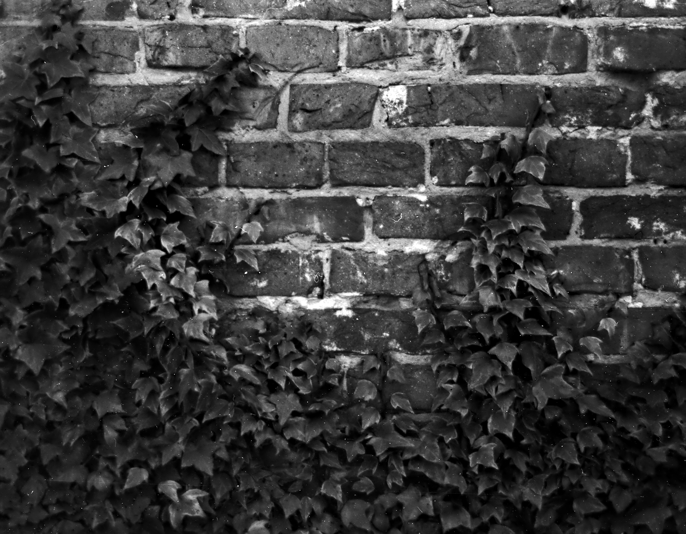
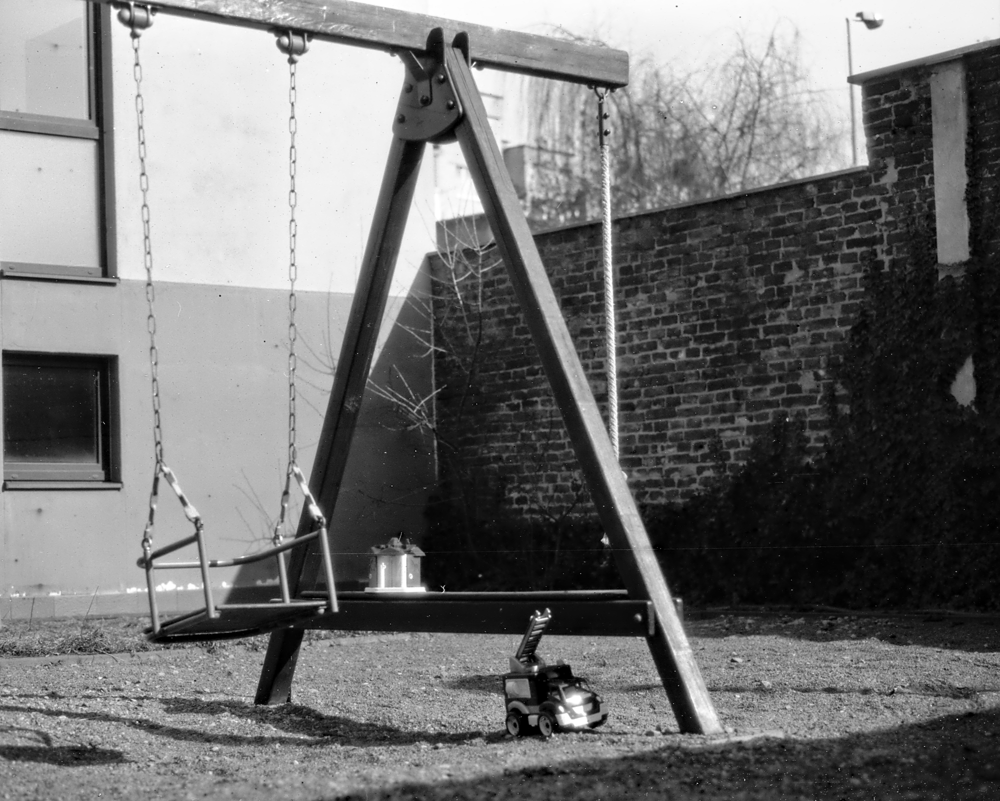

Перша українська крафтова плівка




Зберігати у сухому темному місці. Офіційний термін придатності — 6 місяців. Пам'ятайте: можливий "дозрівання" (ріст ISO на 0.5-1 стоп) з часом.
Крафтова емульсія сохне довше. Слід бути гранично обережним із мокрим шаром. Рекомендована природна сушка: 2-3 години після промивання.
Через особливості ручної роботи рулон може бути трохи товстішим ("fat roll"). Заряджайте та витягуйте плівку в тіні, надійно фіксуючи автозаклейку.
Кожна партія виготовляється вручну з акцентом на високу щільність срібла та класичний тональний діапазон. Ми відродили ремесло емульсійного варіння, натхненне піонерами фотографії: Р. Меддоксом, Т. Торном Бейкером, Р. Моурі та М. Остманом.
*Ми використовуємо нетоксичні реактиви та відновлене срібло. Частина желатину (10-20%) замінена на синтетичні полімери для підвищення стабільності шару.
Температура розчинів: 18-19°C.
Агітація: перша хвилина постійно, далі 10 сек. щохвилини.
| Проявник | Розведення | Час |
|---|---|---|
| Rodinal (Adonal) | 1+25 | 15 – 20 хв |
| Kodak HC-110 | Dilution B (1+31) | 13 – 18 хв |
Ми збираємо відгуки для вдосконалення рецептури. Кожен ваш кадр допомагає проєкту.
Стати тестером| Batch # | Характер партії | Примітки |
|---|---|---|
| 260301 | Класична / Тональна | М'які переходи, ідеальна для портретів при денному світлі. |